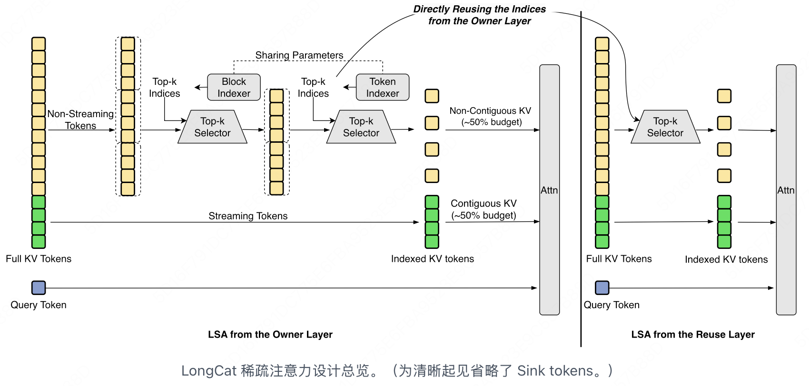

如何在 5 万张国产芯片
训练出 1.6T 万亿参数模型？
LongCat-2.0 技术拆解 · 1.6T 总参 / 33B–56B 动态激活 / 1M 上下文 / 国产 ASIC 训练
不是“又一个大模型”，而是一次 国产万亿模型系统工程 跑通。
一套系统同时证明：国产 5 万卡能训、1M 长上下文能用、MoE 能按 token 动态激活、真实应用调用量能打。
芯
国产算力
5 万+ 卡
1.6T MoE
业界首次在五万张国产卡上完成万亿参数模型全流程训练和推理。
稳态日吞吐 > 1T tokens
文
长上下文
1M token
原生支持百万上下文，采用 LSA 稀疏注意力，长文本定位更精准。
能“看见”整个项目代码
构
架构创新
ScMoE + 零计算专家 + MOPD
token 级动态激活，实际只激活 33B–56B 参数；MOPD 融合三组专家。
Agent × Reasoning × Interaction → 编程 / 推理 / 交互兼顾
用
广泛应用
OpenRouter Top 3
OpenRouter 全球调用量前三；月调用量在 Hermes、Claude Code、OpenClaw 分列全球第一、第二、第三。
Hermes #1
Claude Code #2
OpenClaw #3
架构拆解 Architecture LSA + N-gram + KVP
稀疏注意力如何撑起 1M 上下文
① LSA：从“每个 Query 全量扫”改成“先索引、再稀疏读”

图：LSA 在注意力前增加轻量 Indexer，只取少量相关 Key，并保留固定 Sink tokens 稳定分布。
一句话：LSA 不是让 1M token 全互看，而是每个 q_t 先查“索引”，只读 Top-k 相关 key + 少量 sink token，把注意力计算从稠密全扫压到可控稀疏读。
DSA 的瓶颈
Lightning Indexer 给每个 query 挑 top-k key，但打分输出不连续，且评分本身接近二次开销，索引器会反过来拖慢推理。
LSA 的改法
把索引器拆成三类可开关优化：短任务少开，超长上下文全开；Sink tokens 负责在稀疏 attention 下兜住数值稳定性。
SI
流感知索引
把零散 HBM 访问重排成连续顺序读，让 GPU/ASIC 更容易合并搬运。
CLI
跨层索引
相邻层关注 token 高度重合，做到一次打分、多层复用。
HI
层级化索引
先粗筛 block，再细选 token，避免在百万上下文里逐 token 盲扫。
② N-gram Embedding [另一条扩参轴 · n=5 / 135B 参数]
为什么换轴: MoE 稀疏度已经做到 97%（每次只激活 ~3% 专家），过了甜点区，再加专家边际收益就掉下来。N-gram Embedding 是另一条路: n-gram size = 5，单这一项就砸进 135B 参数，embedding 表大了约 2 个数量级（×100）。它和 MoE 各走各的稀疏维度，不打架。
✓ 为什么选 N-gram
同样 135B 参数，砸到 N-gram 上回报远高于继续堆专家。顺手副作用: 大 batch 解码时显存 I/O 也降了，解码更快。
⚠ 但不能超 50%
N-gram 占总参数比例一旦过半，优势就消失。LongCat-2.0 把它控制在 10% 以内，作为补充而非主力——有甜点区的工具，不是越多越好。
普通 TOKEN EMBED vs N-GRAM EMBED · 同样参数预算更多语义槽
不是堆参数堆出来的稠密，而是把同样的参数放进更细颗粒的局部上下文里。
③ KVP 解码切分示意 [攻克国产芯片三重受限]
Decode 阶段「KV-cache Parallelism, KVP」把 KV-cache 按 rank 切分，每个 rank 在本地 shard 上算 partial attention，再合并 partial results。原文：「在显存容量、显存 I/O 带宽与互联带宽都较为受限的条件下，在万亿参数大模型上跑百万上下文推理是一项不小的挑战」——KVP 是直接对症的解。
Naive Decode
整份 KV-cache 单点持有 → HBM 容量爆 / 带宽打满 / 互联拥塞
KVP Decode
KV-cache 按 rank 切片 → 本地算 partial → 合并；prefill–decode 解耦
打个比方：LSA = 先翻索引再读书——Indexer 是图书馆门口的检索卡片，告诉你这一千页里就第 12、87、340 页相关；Sink tokens 是管理员手里那几张"永远要看一眼"的镇馆卡片，保证翻索引不丢全局。KVP 则把这本"百万页大书"按工位切给不同读者各自读一段再汇总——这才让 1.6T 模型在国产 ASIC 上跑通 1M decode。
训练系统 Training Infra 3 痛点 × 3 解法 · +35% 吞吐
国产卡能不能稳？能不能塞下？能不能撑 1M？——三道关一道道过
① 三痛点速览
痛点 ① 可靠性
国产卡生态不如 Nvidia
抖动 / 数值差异频发
自研确定性算子 + 故障自愈——5 万张卡跑月余整段无回滚
痛点 ② 显存
单卡显存 < H800 的 80GB
装不下 1.6T 模型
6D 并行 + 超节点 + ZeRO-1 优化器分片，把模型切到能塞下
痛点 ③ 长上下文
1M token
注意力计算 + 通信带宽双爆炸
LSA 算子 + 512 路 CP + 计算通信重叠
② 痛点①：确定性算子 + 故障自愈三件套
| 层 | 关键设计 | 机制 |
|---|
| 算子层 | 结果可复现 | 通信与计算路径都做确定性。自研 Embedding / Flash Attention / LSA / MoE 多个确定性算子，同 seed 两次结果完全一致 |
| 数值层 | 对齐高精度 | 二叉树分段累加规约减少浮点漂移；真实 LLM 负载与高精度基线比对验证；再叠一层比特翻转检测 |
| 故障层 | 无人工接管 | 端到端监控自动识别 / 切流 / 恢复；修复链路必须先过压测才重新接入，防止"带病复工" |
关键数字：5 万+ 张国产卡连训月余、整段 0 回滚，系统吞吐对比朴素实现 +35%。
DETERMINISM STACK · 三层叠加才换得 0 回滚
③ 痛点②：6D 并行 + 超节点拓扑
6D PARALLELISM · 把模型切到 6 个维度铺到万卡上
显存优化四件套
ZeRO-1（优化器状态分片）+ 选择性重计算 + 分配器层 OOM 自动卸载 + 填充词元路由到零计算专家
Muon 优化器规模化
Muon（对标 AdamW 的新一代优化器）围绕 TP 并行 / DP 状态去冗余 / 对称矩阵乘核函数做专项工程，万卡稳定收敛
6D PARALLEL · SUPER-POD FABRIC · 把 1.6T 挂在万卡集群上
④ 痛点③：长上下文训练三招
| 招式 | 机制 + 收益 |
|---|
自研 LSA 算子 | 配套确定性注意力 + KL loss算子。预热阶段 forward-only，一次前向同时拿到 KL 与梯度——训练成本降一半 |
512 路 CP | all-gather Context Parallel 扩到 ≥ 512 路，直接吃原生 1M 数据；数据预取阶段重新打散均衡切分，防卡先空转 |
| 计算通信重叠 | ScMoE（带通信重叠的 MoE）让 MoE 跨机通信与分支计算并行；LSA 的 top-k 索引与 KV all-gather 完全重叠——通信被算掉而不是等掉 |
1M CONTEXT TRAINING · 单 step 时间线：朴素实现 vs 三招叠加
⑤ 三阶段时间轴（结合 §3 后训练）
一句话: 国产卡训前沿模型 = 算子层稳 + 拓扑层切 + 长程层叠三件事——5 万卡月余 0 回滚不是运气，是把这三关都过了。
Agentic RL 配方 Post-training MOPD · Multi-teacher Online Policy Distillation
不做单一 RLHF，搭 3 个专家组 → 在线蒸馏 → 同时回灌主模型
① 先讲清: agentic RL 到底练什么
「Agentic RL」= 让模型在真实工具环境里反复做多步任务（查资料、改代码、跑命令），由teacher 示范和评分器告诉它哪一步好/不好，把"会规划+会用工具"的能力直接练进权重——不依赖更长的 prompt 或外挂脚手架。
② MOPD 三大专家组 + 6 个原子能力
教师 ① · Agent 能力组
教学生"自己动手干活"
把任务从头跑到尾
3 个原子能力：
· 复杂工具调用的参数精准度
· 多轮 API 里准确解析返回值
· 死循环 / 重复调用的自我纠错
教师 ② · 推理能力组
教学生"难题想深"
难度大就多想几步
2 个原子能力：
· 按问题难度自适应分配思考长度
· 多跳知识链路的连贯性
教师 ③ · 交互体验组
教学生"听人话 + 不胡说"
把对齐和安全揉到细节
2 个原子能力：
· 细粒度指令的字面遵循
· 有用性不打折下的安全边界
③ MOPD 在线蒸馏循环（核心机制图）
MOPD = MULTI-TEACHER ONLINE POLICY DISTILLATION · 学生每生成一句, 3 位老师同时纠
④ 为什么"在线"不"离线"
离线蒸馏 ✗
老师先把题做完存成数据集，学生再去背。学生越练越偏——自己实战时分布跟教材对不上，这就是 训练-推理 mismatch（学的时候 ≠ 实际用的时候）。
在线蒸馏 ✓
学生一边自己说话，老师在旁边实时纠。学生练的就是它实际会说的话，不存在分布错位。
⑤ MOPD vs 传统 RLHF
| 对比项 | 传统 RLHF | MOPD |
|---|
| 反馈来源 | 1 个奖励模型，信号粗 | 3 位专家教师，各管一条线，信号精细 |
| 能力扩展 | 新加一项要重训整条 RL pipeline | 加一个教师就行，模块化 |
| 训练-推理一致性 | 容易飘（reward hacking） | 实时对齐，不飘 |
一句话: MOPD = 3 个专家组 × 在线纠错 × 模块化扩展——每位老师管一条线，学生说一句改一句，不被过期教材喂偏。
评测套件 Benchmarks 5 个基准 + 推理参数
官方点名的 5 个评测套件 + 三套采样参数 + 裸模型评测设计
① 评测矩阵 [基准 / 定位 / 采样参数]
| 基准 | 定位 | 采样参数 |
|---|
FORTE
Full-cycle Office Real-world Task Evaluation |
15 类岗位的真实办公 agent 任务「多步规划 + 工具调用」 |
— |
RW-Search
美团自建 |
搜索智能体基准，裸模型评测「仅 basic Search + Browse，不做上下文管理」 |
— |
| IMO-AnswerBench |
数学奥赛题集，长链推理 |
T=1.0 / top_p=0.95 |
Claude Code 沙盒
8c16g |
仓库级修改 / 自动化任务执行（Anthropic agent harness） |
T=1.0 / top_p=0.95
agent 6h timeout |
Claude Code 沙盒
4c8g |
更紧的资源约束；problematic tasks corrected |
T=1.0 / top_p=1 |
② 三套采样参数（一眼对齐）
IMO-AnswerBenchT=1.0 / top_p=0.95
Claude Code 8c16gT=1.0 / top_p=0.95 / 6h
Claude Code 4c8gT=1.0 / top_p=1
③ 裸模型评测的设计意图
打个比方：很多搜索 agent 跑分靠外挂工程把上下文管理、query rewrite、re-ranking 全堆在 harness 里——分数高、但本体能力看不清。RW-Search 选了相反路线：只给模型 basic Search + Browse 两件工具，不做任何上下文管理，让裸模型「不依赖外部脚手架的本体能力」直接暴露在评测下。把搜索 agent 能力作为可量化训练目标，目的是约束训练而不是刷榜。
5 个基准官方点名，3 套采样参数公开，对手画像「leading proprietary models」——具体分数与对比模型版本请去 blog 官方动态表查看。
推理优化 Inference PD 分离 · 模型/设备/部署三层
① 模型层：动注意力本身和 MoE 怎么算
| 招式 | 机制 |
|---|
| ① absorb 矩阵吸收 | 把一些原本要单独算出来的中间矩阵"吸收"进相邻矩阵乘里。Prefill/Decode 两段通用，少一次显存来回 |
| ② indexer 与 MLA 并行 | LSA 的轻量索引器和 MLA（Multi-head Latent Attention）开头部分同时启动，索引器开销被 MLA 计算盖住，不再单独占时间 |
| ③ KVP 切 KV cache | 把巨大的 KV cache 切到多张卡上协同读写。Decode 阶段的内存压力第一次被横向摊开 |
ScMoE：让 dense 流和 MoE 流真正同时跑
不只是"计算和通信重叠"——主动把国产卡上的核心数分给 dense 分支和 MoE 分支，两条流真并行，不再轮流占算力。
MODEL-LAYER · 模型层 4 招都在压「等待」
② 设备层：给国产 ASIC 量身打的三招
| 招式 | 机制 |
|---|
| Super Kernel | 图模式已经消掉算子之间的空隙，但算子内部还有"启动开销"。把多个小算子合并成一个大核，总启动次数直接砍掉 |
| Weight Prefetch | 国产卡显存带宽吃紧但 L2 cache 大。提前一拍把下一个算子要用的权重塞进 L2，I/O 藏进前一个算子的计算里 |
| Scale Up & Out | 200 Gbps 网卡按 layer-wise 在 Prefill/Decode 节点之间传 KV cache；KV cache store 建在主机 RDMA 上；TP/SP/KVP 全留在高速 scale-up 域内 |
THREE TRICKS FOR DOMESTIC ASIC · 针对国产卡的瓶颈定制算法
③ 部署层：EPLB 让 EP128 真正跑满
EPLB · Expert-Parallel Load Balancing 专家并行负载均衡
EP 越大越容易负载不均：热门专家把单卡打满，整批请求被它一个人拖住。EPLB 把统计采集和分布计算异步化——一边在线收专家命中频率，一边离线算新的专家放置策略，再热更新到推理节点，不阻塞主路径。这是 EP128 能真正跑满的最后一块拼图。
EPLB · ASYNC EXPERT LOAD BALANCING · EP128 不让单卡热点拖整批
节首那张 Prefill vs Decode 大图就是 §5 的骨架，后面所有招式都是在给这两段补血——模型层动算法、设备层榨硬件、部署层调拓扑。